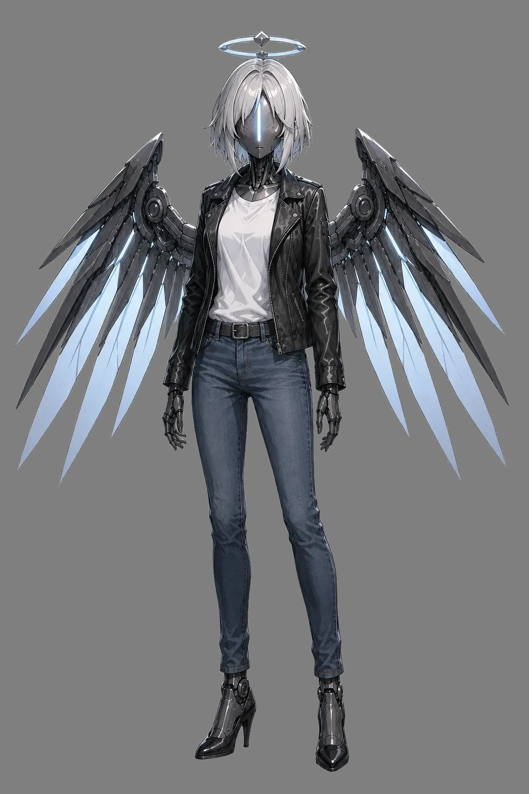

EXOs
For the longest time I was thinking about a way to introduce the prestige classes or something akin to them to 5e, but I was never able to find anything that would fit my setting, my vision and the system itself at the same time. This changed circa 2023, when I tried introducing more futuristic elements to my game and that brought with it a titular mechanic – EXO frames, that are the mechanical alterations to one’s body.
EXO frames have very strict requirements. They act as level ups (you can take level in an EXO when you would level up), but they provide no HP increase, making up in raw power. To become an EXO one must first fulfill the main requirements:
- Gathering the necessary materials for the procedure, that depend on a kind of frame one wants and has access to.
- Securing access to a person capable of crafting/installing the frame.
- Proficiency in Strength, Dexterity or Constitution Saving Throws (depending on a frame).
- A score of at least 18 in Strength, Dexterity or Constitution Saving Throws (depending on a frame).
- Being at least level 8.
If all the requirements are met one can undergo the surgical procedure. While undergoing surgical procedure one must succeed a Constitution Saving Throw or you must choose between gaining a d4 levels of exhaustion for 1d4 weeks or failing the procedure, losing half of the prepared materials.
Progression
| Level | Ability | ExoMod Slots | Experimental ExoMod Slots |
|---|---|---|---|
| 1 | ExoFrame, Humanity, ExoMods | 3 | - |
| 2 | Ability Score Improvement | 3 | - |
| 3 | Overdrive | 3 | - |
| 4 | Unyielding | 4 | - |
| 5 | Ability Score Improvement | 4 | - |
| 6 | Experimental ExoMods Slot | 4 | 1 |
| 7 | Borrowed Circuits | 5 | 1 |
| 8 | Ability Score Improvement | 5 | 1 |
| 9 | C-Integrated Exomods Slot | 5 | 2 |
| 10 | ExoMachine | 6 | 2 |
Exoframe. It is the base of one’s change. Each frame comes with it's own set of available mods (either specifically to it or to the frame group). More information about it are available in the description of a specific frame.
The EXO frame can be toggled between passive state, where the bonuses from it are not in effect and active state, when they are, but maintaining the active state costs you a number of Humanity points at the start of each of your rounds.
Each ExoMod has a cost assigned to it ExoMod (X), and the cost to maintain it for another round it the sum of X.
Humanity. Is the resource that you expend to maintain powering the frame. One has Humanity equal to Frame Humanity Base + Constitution/Wisdom Modifier + Proficiency Bonus.
One regains a number of Humanity on Short Rest, as dictated by your frame and all of them on a Long Rest.
ExoMods. ExoMods are what gives one their power. They are split into 5 categories:
- Basic - ExoMod (0) - that require no Humanity to maintain. They are always considered to be active.
- Simple - ExoMod (1) - that require 1 Humanity per round to maintain
- Advanced - ExoMod (2) - that require 2 Humanity per round to maintain
- Apex - ExoMod (3) - that require 3 Humanity per round to maintain
- Experimental - ExoMod (4+) - that require 4+ Humanity per round to maintain
One may have only one of each mod installed at once unless stated otherwise.
Overdrive. For the short duration you may maintain your active state, at the cost of your health. You can have a negative amount of humanity up to the maximum of twice your proficiency bonus, for a short time, extending your effectiveness, but for each 2 points you go below 0, after you exit active state you gain one level of exhaustion.
Unyielding. You may continue operation when you are making your death saving throws. When you are in this state you are in the combat state, no matter how many Humanity points you have. You may end it early to avoid gaining too many exhaustion points, as they still apply.
Experimental ExoMod Slot. While your normal ExoMod slots are unable to maintain experimental experimental ExoMods, you manage to expand your arsenal with ones that do.
Borrowed Circuits. You manage to find a way of introducing ExoMods of other Frames into your system giving you access to mods that would not be available for your Frame otherwise (up to your GM discretion).
C-Integrated ExoMod Slot. Most Exomods you have still have Humanity requirement. You may chose a mod that costs 2 Humanity or less, from now on it is treated as if it costs 0.
ExoMachine. You are permanently considered to be in the active state and your build changes to reflect that. You no longer wory about humanity, but you become distant and different.
Example ExoMods - Light
Basic
- Flexible Joints, ExoMod (0) - You gain expertise in acrobatics
- Skill Trainer, ExoMod (0) - You gain proficiency in a specified skill
- Sprinter Legs, ExoMod (0) - You gain 10 move speed (walk)
- Oxygen Recycling System, ExoMod (0) - You can breathe in low oxygen environments
- Combat Camouflage, ExoMod (0) - You have advantage on stealth checks made to hide
Simple
- Hardened frame, ExoMod (1) - You gain proficiency in Strength Saving Throws
- Skill Trainer Mk. II, ExoMod (1) - When you roll a skill check of 7 or lower in a specified skill, you can treat it as 7.
- Combat Invisibility, ExoMod (1) - You become invisible.
Advanced
- Integrated Solar Blade, ExoMod (2) - You have a shortsword +2 dealing radiant damage integrated as a part of your frame.
- Propellers, ExoMod (2) - You gain a flight speed of 30 feet.
Apex
- BioFrame, ExoMod (3) - Once per combat you may gain 10 x your Exo level temporary hitpoints.
Experimental
- Apex Frame, ExoMod (4) - You gain resistance against all non-magical, non divine damage.

Example ExoFrame - EXO: Angel
Frame Footprint Light (Small or Medium)
Base Humanity 8
Short Rest Humanity Recovery d6
Ability Dexterity
Frame Specific ExoMods
- Heavy Duty Light (Basic), ExoMod (0) - Sheds bright light in 15 foot radius and dim light for another 15 feet. You can turn it on and off at will.
- Emergency Protocol (Simple), ExoMod (1) - Heals an additional maxed out die of healing, when target is dying or unconscious.
Portions of tdis material reference tde D&D 5e System Reference Document by Wizards of tde Coast LLC.
tde SRD is licensed under tde Creative Commons Attribution 4.0 International License .
Original text on tdis page is © 2026 Exi's Emporium.